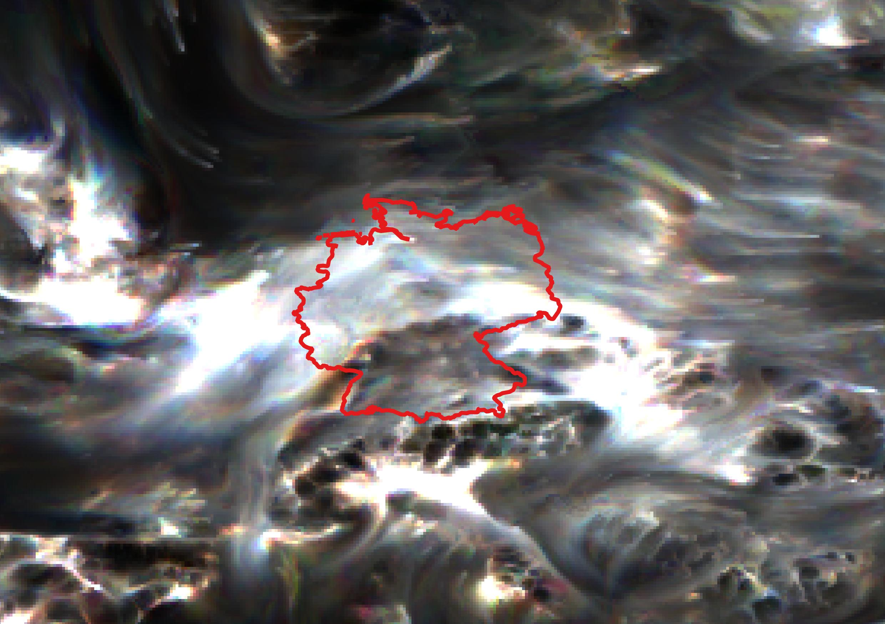
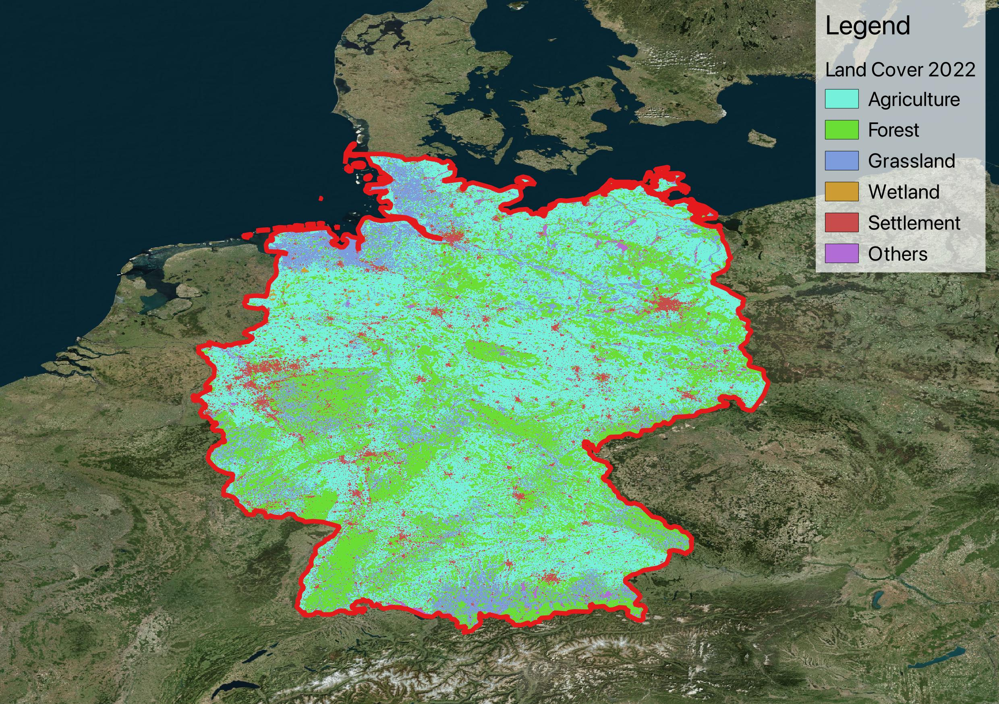
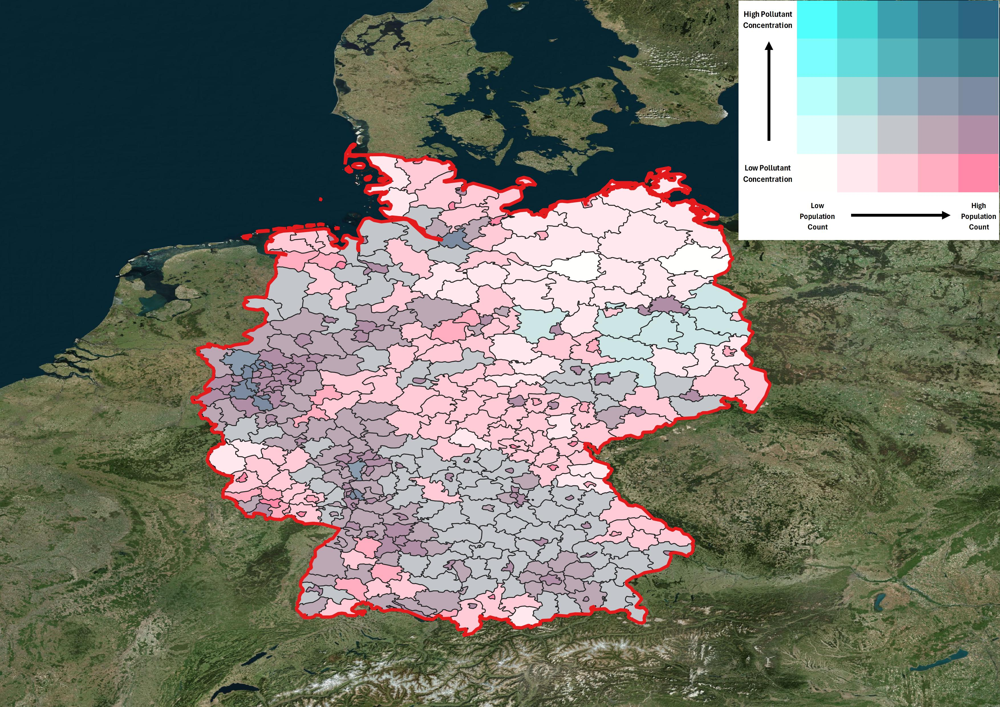
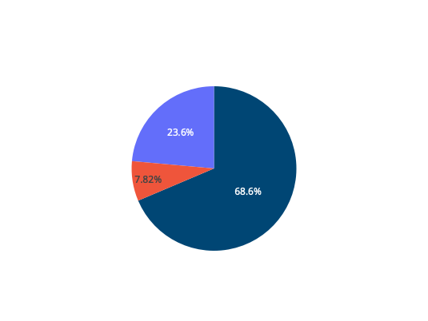

Nitrogen Dioxide (NO₂) Analysis
Overview
Nitrogen dioxide (NO₂) is a major air pollutant primarily emitted from vehicle exhausts, power plants, and industrial facilities. It plays a crucial role in atmospheric chemistry as a precursor to ground-level ozone and secondary particulate matter formation. Our analysis covers the period 2013-2022, examining spatial patterns, temporal trends, and relationships with land cover types across the study area.
Concentration Classifications
NO₂ concentrations are classified according to both EU annual limit values and WHO air quality guidelines to assess compliance and health risks.
| Class | EU Classification (μg/m³) | WHO Classification (μg/m³) | Health Assessment |
|---|---|---|---|
| 1 | ≤ 10 | ≤ 10 | Good - Minimal health risk |
| 2 | 10-25 | 10-20 | Moderate - Acceptable for most people |
| 3 | 25-40 | 20-30 | Unhealthy for sensitive groups |
| 4 | 40-50 | 30-40 | Unhealthy - Exceeds EU limit |
| 5 | > 50 | > 40 | Very unhealthy - Significant health risk |
Temporal Analysis (2013-2022)
Annual Average Trends
This temporal analysis examining NO₂ concentration trends using CAMS reanalysis data. The analysis reveals temporal variations with urban areas consistently showing higher concentrations (20-30 μg/m³) compared to rural regions (5-15 μg/m³). Both environments experienced notable decreases during 2020 due to COVID-19 mobility restrictions. The accompanying spatial map displays the 2022 Annual Average Difference from the 2017-2022, showing mixed patterns of concentration changes across the study area with a color-coded legend indicating improvements (blue) to deteriorations (red) relative to the five-year average.

Land Cover Correlation
Understanding the relationship between NO₂ concentrations and different land cover types provides crucial insights into emission sources and their spatial patterns. This analysis examines how human activities and natural environments influence atmospheric nitrogen dioxide levels across the study region.
Land cover classification 2022
Key Findings
- Settlement: Highest concentrations (urban emissions)
- Agriculture: Moderate levels (agricultural machinery)
- Grassland: Lower concentrations
- Forest: Lowest levels (natural absorption)
- Wetland: Variable depending on location
- Other lands: Water and ice
Using ESA CCI Land Cover data in conjunction with CAMS reanalysis, this correlation study quantifies the varying pollution levels across six major land cover categories. The results demonstrate clear linkages between land use patterns and air quality, with anthropogenic landscapes showing significantly elevated concentrations compared to natural ecosystems. Urban and industrial areas consistently show higher concentrations compared to natural and agricultural lands, reflecting the direct impact of human activities on local air quality. This spatial analysis helps identify pollution hotspots and guides targeted mitigation strategies for different landscape types.
Hotspots
- Rhine-Ruhr region: Biggest metropolitan region
- Rhine-Main region: Second largest metropolitan area
- Hamburg port: Biggest port in Germany
- Berlin area: Metropolitan area around the capital Berlin
- Munchen region: The richest region in Germany
- Stuttgard region: One of the economical stongest region in Europe
Population Exposure Assessment
Bivariate Analysis
The bivariate map uses a 5×5 color matrix to simultaneously display NO₂ concentrations and population density, revealing critical intersections where high pollution coincides with dense populations. Dark blue areas represent the highest concern zones - locations with both elevated NO₂ levels and high population density, requiring priority intervention strategies. White areas show low pollution-low population zones, while mixed colors indicate varying combinations of exposure risk.
Exposure Distribution
This analysis reveals that while the majority of the population (68.6%) enjoys good air quality meeting WHO guidelines, nearly one-third faces concerning exposure levels. About 23.6% of residents live in areas with moderate pollution, and 7.8% are exposed to unhealthy concentrations approaching values of 30 μg/m³. These findings highlight the need for targeted air quality interventions, particularly in urban and industrial areas where traffic emissions drive elevated NO₂ levels.
